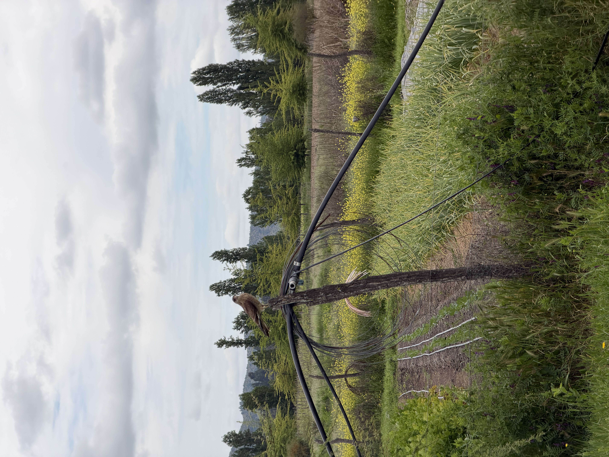

What permaculture can teach us about interdisciplinarity in science#
The last three weeks, I have been on a permaculture farm and being there showed me a new perspective on why we need more interdisciplinarity in science. If you are curious to know what got me thinking about such a fundamental scientific concept while transplanting, weeding and harvesting, stay with me.
Permaculture farms aim to demonstrate that it is possible to cultivate biodiversity and manage soil and water organically, without relying on synthetic chemicals (Note that I am no expert in permaculture, I just try to explain what I learned on the farm. If I got something wrong please let me know). Natural fertilisers and compost are used to maintain the health of the plants and soil. The goal is to improve the long-term fertility of the soil through techniques such as crop rotation, composting, and other practices. Permaculture also aims to conserve water in the soil, ensuring that plants have enough water and nutrients to grow without creating excessively wet conditions that could harm organisms such as earthworms. More broadly, it seeks to minimise our impact on the planet by encouraging mindful eating and fostering a direct relationship between humans and the environment.
Although these concepts were very interesting, they did not initially lead me to make a connection with science. However, another core concept of permaculture is “el borde”, the Spanish word for “the edge”. What it implies or hypothesises is that at the edges between two environments, such as between grass and a vegetable bed, between water and grass, or along a fence, there is richer vegetation and a greater diversity of plants and animals, than in either environment alone or in a small stream.
This idea got me thinking about science and interdisciplinarity. At the intersection between two or more scientific disciplines, there is a huge diversity of research going on. Scientists from different backgrounds bring different ideas to the table and can collaborate to address complex problems that might be difficult for researchers from a single discipline to tackle alone.
One way of thinking about interdisciplinarity is to consider the different questions and starting points that researchers bring to a problem. Some areas of mathematics may begin with abstract theories and explore how they can be applied, whereas computer science, engineering, biology, medicine, and environmental science often begin with practical or empirical questions and draw on mathematical tools as needed. These distinctions are not absolute. Many mathematicians work on applied problems, while researchers in biology and computer science also develop theories and methods of their own.
Disciplines may also examine phenomena at different scales. Biology can focus on molecular, cellular, organismal, or ecological levels. Chemistry often examines matter and its transformations. Physics may study systems ranging from subatomic particles to galaxies and geology as well as the social sciences add perspectives on earth systems and human communities. Statistics and data science, meanwhile, provide methods that can connect many of these fields. These are only broad tendencies, but differences in questions, methods, and scales can create productive connections between disciplines.
One way to promote more interdisciplinary research is to introduce students to connections between disciplines early in their education. Courses could be organised around shared questions or real-world problems, showing how different fields contribute different perspectives, methods, and kinds of knowledge. For example, a course on climate change could combine insights from physics, biology, geology, data science, economics, and the social sciences. This could help students see that disciplines are not isolated boxes and encourage them to explore connections beyond their main subject.
Researchers who are already established in their fields could also help create more opportunities for interdisciplinary work. They could participate in seminars and workshops outside their own disciplines, collaborate with researchers who use different methods, co-supervise students, and develop projects around shared questions rather than around disciplinary boundaries. Universities and funding organisations could support this by creating more interdisciplinary programmes, grants, and spaces for researchers to meet and develop a place to exchange these ideas. Of course, not every research question requires an interdisciplinary approach, but when a problem involves several kinds of knowledge, collaboration across disciplines can lead to insights that might otherwise remain hidden.
However, finding these connections is not always easy or convenient. I am sure that, as scientists, we could still watch out for more opportunities to bring our knowledge together.
Thank you for staying with me until the very end of this post! If you have any thoughts or ideas about what I could explore and write about next, feel free to open a GitHub issue. I would love to hear your ideas!
